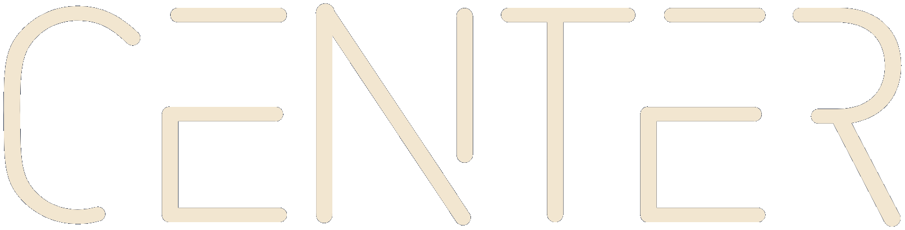

Clinical-use notice
For licensed clinicians as educational decision support. Not a substitute for clinical judgment, specialty consultation, institutional protocol, or current manufacturer labeling. Verify species origin, formulation, excipients, and lot before use. Premedication does not reliably prevent anaphylaxis. Not peer-reviewed. Not FDA-evaluated.
AAFPRS Las Vegas 2026AGS CompanionClinical decision tools

Tick-Primed Hypersensitivity in Cosmetic and Aesthetic Procedures
Marielle He, MD, MS1 · Jordan Kai Simmons, MD2 · Babak Azizzadeh, MD, FACS1,2
1 CENTER for Advanced Facial Plastic Surgery, Beverly Hills, CA 2 Division of Otolaryngology–Head and Neck Surgery, Cedars-Sinai Medical Center, Los Angeles, CA
Classify the patient, then act. Testing is triggered by history, not by the mere presence of a mammalian-derived material.
No suggestive history
No prior red-meat or mammalian-product reaction, no known alpha-gal sensitization, and no tick-exposure history that has produced symptoms.
Proceed. No routine pre-procedure α-gal testing is indicated solely because a mammalian-derived material may be used. Document the negative screen.
Suspected AGS
Suggestive history (delayed urticaria/anaphylaxis after mammalian products, gelatin/dairy reactions, or symptomatic tick-bite history) without confirmatory testing.
Defer elective use of α-gal–containing materials. Refer for α-gal sIgE and/or allergy evaluation, or select a non-mammalian alternative. Testing is not mandated before every procedure.
Established AGS
Prior clinical reaction plus positive α-gal sIgE, or specialist diagnosis.
Avoid α-gal–containing materials. Use documented non-mammalian alternatives and coordinate with allergy/anesthesia as appropriate.
SCREEN · SUBSTITUTE · PREVENT — history first; then verify source; then substitute or prepare. Confirm is not a mandatory lab step before every procedure.
Intraprocedural verification
IDENTIFY every mammalian-derived item on the field — hemostats, matrices, sutures, injectables, hyaluronidase, excipients.
VERIFY species, source, excipients, and lot against the current instructions for use — not the brand name alone.
SUBSTITUTE with a source-verified non-mammalian option where one exists.
IF NO SUBSTITUTE — flag for allergy/immunology input and anaphylaxis precautions.
ORAL
Delayed 3–6 h
PARENTERAL
Immediate possible
IMPLANT
Prolonged exposure
2Materials verification
No aesthetic-specific literature directly assays α-gal epitope content in cosmetic products. Rows grade literature evidence separately from the action that evidence supports. A weak evidence grade can still warrant a simple substitution (e.g., recombinant hyaluronidase).21,22,20
On a phone, swipe the table sideways. Named products illustrate class as of the 2 August 2026 review date; re-verify current IFUs. Evidence strength is not the same as clinical action.
Materials: evidence strength versus clinical risk and action
Exposure
Evidence strength
Clinical risk / action
Significance
Gelatin hemostats Bovine / porcine · e.g. GELFOAM, FLOSEAL
Demonstrated
Avoid; use non-gelatin
Class-level perioperative anaphylaxis; not a brand assay.1,5,13,14
Porcine UFH Porcine mucosa
Clinical signal
Substitute if feasible; caution high-dose IV
Route/dose dependent. High-dose IV cardiac: 4/17 severe (24%); 4/8 with recent titers (50%). Lower-dose inpatient: 1/39 UFH (2.6%); 0/22 enoxaparin (0%). Not an absolute contraindication.4,15,19
Mammalian matrices Porcine / bovine · e.g. Strattice, SurgiMend
Mechanistic inference
Verify source; consider alternative
Adjacent-specialty precedent; no prospective cosmetic or aesthetic cohort.3,16,17
Composition-based only; no aesthetic AGS reaction series.22,26,18
Testicular hyaluronidase† Ovine / bovine testis · e.g. Vitrase, Amphadase/Hydase
Theoretical
Prefer recombinant (Hylenex)
Mammalian-extract N-glycans, including core-fucosylated species; no AGS cases reported.36,32
HA / CaHA / PLLA / lidocaine Bacterial HA, synthetic, or non-mammalian after source check
No established AGS risk
Standard use
Other hypersensitivity still possible. Older avian HA is not mammalian. Verify source.2,6,26,27
Botulinum toxin Human albumin excipient — verify IFU
No established AGS risk
Standard use after IFU check
No α-gal reaction data identified. Historically animal-stabilized lots would warrant IFU review.26
Detectable α-gal IgE does not reliably predict clinical reactivity. Some sensitized patients tolerate mammalian-derived products. Framework is risk stratification, not reflexive exclusion. Evidence strength and clinical risk are reported separately because a material can be well-documented yet variable in practice, or mechanistically plausible yet poorly studied.3,25,29,24
DELAYED REACTIONS ≠ α-GAL. Delayed filler or acellular-dermal-matrix reactions are not α-gal evidence, and α-gal screening will not detect them.2,6–8
† Hyaluronidase — intrinsic risk is a different axis. Hyaluronidase carries an intrinsic, label-documented anaphylaxis risk (independent of α-gal; higher with prior hymenoptera-venom allergy) that recombinant sourcing does not remove.33,31,32,34 A reaction cannot be assumed to be α-gal–mediated even in confirmed AGS. Switching to recombinant (Hylenex) removes only the glycan variable; protein-directed IgE and the labeled hypersensitivity contraindication remain.32 Document which mechanism is suspected.
Fillers: source-verified HA, CaHA, PLLA, or autologous fat rather than mammalian collagen.
Filler reversal: recombinant hyaluronidase addresses only the theoretical α-gal variable; it does not eliminate intrinsic hyaluronidase anaphylaxis (see †).
Sutures/grafts: synthetic, human, or autologous options when feasible.
AGS evidence gaps
No prospective cosmetic or aesthetic cohort, validated procedure-specific screening threshold, product-specific reaction rate, reaction registry, or brand-level α-gal assay exists.
“No AGS-specific risk identified in the available literature” is not evidence of safety and is not a brand assay.
▶Audio and transcripts
Track A · Printed poster
Author narration · 6:32
AI · 2:34
Read Track A transcript
This is the audio narration for the poster “Tick-Primed Hypersensitivity in Cosmetic and Aesthetic Procedures”
by Marielle He, Jordan Kai Simmons, and Babak Azizzadeh of the CENTER for Advanced Facial Plastic Surgery, Beverly Hills, and the Division of Otolaryngology–Head and Neck Surgery, Cedars-Sinai Medical Center, Los Angeles.
Scope: a targeted, non-systematic narrative review. Risk categories are extrapolated from surgical, mechanistic, and product evidence, not aesthetic outcome data.
Alpha-gal syndrome, or AGS, is an acquired immunoglobulin E, or IgE-mediated, allergy to galactose-alpha-1,3-galactose in non-primate mammalian tissue and products.
Diagnosis requires a compatible clinical history plus alpha-gal IgE.
Sensitized doesn’t equal reactive.
Epidemiology: the Centers for Disease Control and Prevention, or CDC, identified 90,018 suspected U.S. cases from 2017 through 2022, and estimated 96,000 to 450,000 affected since 2010.
Based on the 300 donor samples per state across 10 states, estimated seroprevalence was 31.2% in Arkansas, 95% confidence interval 25.7 to 36.6, and 26.0% in Missouri, 95% confidence interval 22.0 to 30.0.
Seropositivity is not clinical disease.
A CDC county-level map shows suspected cases concentrated in the southeastern, south-central, and mid-Atlantic states, mirroring the range of the lone star tick.
Clinical decision: Screen. Substitute. Prevent.
Six steps. One: history of reactions and tick exposure. Two: confirm with compatible history plus alpha-gal IgE. Three: audit hemostats, fillers, grafts, sutures, and excipients. Four: verify species, source, formulation, and lot. Five: substitute source-verified hyaluronic acid or other non-gelatin options when appropriate. Six: prepare allergy input when risk is material, plus epinephrine readiness.
Route determines timing. Oral exposure is typically delayed three to six hours. Parenteral exposure may be immediate. Implant material can prolong exposure.
Food-challenge thresholds do not establish product safety.
Perioperative anticoagulation. In confirmed AGS, porcine unfractionated heparin, or UFH, has caused reactions, strongest with high-dose intravenous cardiac exposure.
In that series, severe reactions occurred in four of seventeen patients, or 24 percent. Among eight patients with recent titers, four reacted, or 50%.
In the lower-dose inpatient series, reactions occurred with one of thirty-nine UFH exposures, 2.6%, and zero of twenty-two enoxaparin exposures, 0%.
When feasible, consider an indication-appropriate non-mammalian anticoagulant. However, heparin remains acceptable when it is the clinically preferred agent, managed through shared decision-making with allergy input and epinephrine readiness rather than treating heparin as an absolute contraindication.
Material risk by evidence tier. Gelatin hemostats lead the demonstrated tier from class-level human anaphylaxis reports. Porcine heparin is a clinical signal. Mammalian matrices are mechanistic inference, cross-specialty precedent, with no prospective cosmetic or aesthetic cohort.
Collagen-containing polymethyl methacrylate, or PMMA, filler and catgut are theoretical composition-based concerns.
Source-verified hyaluronic acid, calcium hydroxylapatite, poly-lactic acid, or PLA, and lidocaine carry no established alpha-gal-specific risk, though unrelated hypersensitivity remain possible.
Other mechanisms remain distinct. Delayed filler or acellular dermal matrix reactions do not constitute alpha-gal evidence, and alpha-gal screening will not detect them.
Evidence gaps. No prospective cosmetic or aesthetic cohort, validated procedure-specific screening threshold, product-specific reaction rate, reaction registry, or brand-level alpha-gal assay exists.
Closing. This narration is decision support for licensed clinicians. It is not medical advice and does not replace clinical judgment, allergy consultation, institutional protocols, or manufacturer verification.
Alpha-Gal Audio Companion. Track B, Digital Companion.
The Track A script is estimated at 6 minutes 32 seconds.
This Track B script is estimated at 7 minutes 49 seconds.
The combined estimated duration is 14 minutes 21 seconds.
Final measured times will replace these estimates after recording.
Playback may be paused or stopped at any time.
This companion has 10 sections.
Section 1, Overview and framing statement.
Section 2, What alpha-gal syndrome, or A-G-S, is.
Section 3, Why it matters to cosmetic and aesthetic practice.
Section 4, Epidemiology.
Section 5, Route and timing of exposure.
Section 6, Mechanistic context—companion detail.
Section 7, Material risk by evidence tier, including the heparin clinical signal.
Section 8, Substitution guidance.
Section 9, Prolonged exposure and other hypersensitivity mechanisms.
Section 10, Evidence gaps, methods, disclosures, artificial intelligence use statement, and references.
Section 1 of 10. Overview and framing statement.
Welcome to the digital companion for Tick-Primed Hypersensitivity in Cosmetic and Aesthetic Procedures, by Marielle He, Jordan Kai Simmons, and Babak Azizzadeh.
Screen. Substitute. Prevent.
No study has quantified cosmetic or aesthetic alpha-gal reactions or directly assayed a cosmetic or aesthetic product brand.
The tiers are precautionary extrapolations, and no validated product-specific immunoglobulin E cutoff exists.
End of Section 1.
Section 2 of 10. What alpha-gal syndrome, or A-G-S, is.
Alpha-gal syndrome is an acquired immunoglobulin E–mediated, or I-G-E–mediated, allergy to galactose-alpha-1,3-galactose, a carbohydrate in non-primate mammalian tissue and products.
Tick bites can induce alpha-gal I-G-E.
Diagnosis requires compatible symptoms plus alpha-gal-specific I-G-E. Sensitization alone is not A-G-S.
End of Section 2.
Section 3 of 10. Why it matters to cosmetic and aesthetic practice.
Cosmetic and aesthetic practice uses gelatin, collagen, thrombin, grafts, implants, sutures, heparin, injectables, and excipients.
Some are mammalian-derived, and source may vary by formulation or lot.
Composition is an audit prompt, not proof of reaction. Prior tolerance is not a guarantee.
End of Section 3.
Section 4 of 10. Epidemiology.
The C-D-C identified 90,018 suspected United States cases during 2017 through 2022, and estimated 96,000 to 450,000 affected since 2010.
Suspected cases were positive alpha-gal-specific I-G-E tests without clinical data.
A blood-donor serosurvey tested 300 samples per state across 10 states.
Arkansas seroprevalence was 31.2 percent, 95 percent confidence interval 25.7 to 36.6. Missouri was 26.0 percent, 95 percent confidence interval 22.0 to 30.0.
Seropositivity is not clinical A-G-S.
End of Section 4.
Section 5 of 10. Route and timing of exposure.
Route determines timing. Oral reactions are delayed three to six hours. Parenteral reactions may be immediate. Implants can prolong exposure. Dose and dwell time are also relevant.
In one food-challenge cohort, 2.0 kilounits per liter or 0.75 percent of total I-G-E had greater than 95 percent positive predictive value. Above 5.5 kilounits per liter or 2.12 percent corresponded to about 95 percent modeled probability. These are food-allergy results, not cosmetic-product cutoffs.
The six steps are: one, history; two, confirm history plus alpha-gal I-G-E; three, audit products; four, verify species, source, excipients, and lot; five, substitute source-verified hyaluronic acid, or H-A, and non-gelatin options; six, prepare epinephrine and a reaction plan, with allergy input if uncertain.
End of Section 5.
Section 6 of 10. Mechanistic context—companion detail.
Established pathway: tick, alpha-gal I-G-E, mammalian product, reaction. Screening can detect existing sensitization, not a product-specific reaction. Human evidence includes cetuximab reactions.
Emerging question: xenogeneic product, new alpha-gal I-G-E, future reaction? Product-associated sensitization is unestablished in humans and supported only by in vitro or animal evidence. Baseline screening cannot predict future sensitization.
End of Section 6.
Section 7 of 10. Material risk by evidence tier, including the heparin clinical signal.
First, Demonstrated: gelatin hemostats, with class-level human perioperative anaphylaxis reports, not evidence against every brand.
Second, Clinical signal: porcine unfractionated heparin, or U-F-H. With high-dose intravenous cardiac exposure, severe reactions occurred in 4 of 17 patients, or 24 percent. Among 8 patients with recent titers, 4 reacted, or 50 percent.
A lower-dose inpatient series found 1 of 39 U-F-H reactions, 2.6 percent, and 0 of 22 enoxaparin reactions, or 0 percent. The differing exposure settings underscore why the high-dose cardiac estimate cannot be generalized to other routes or doses.
Third, Mechanistic inference: mammalian matrices, without a prospective cosmetic or aesthetic cohort. Fourth, Theoretical: collagen P-M-M-A filler and catgut, without an aesthetic A-G-S reaction series.
Fifth, No established A-G-S-specific risk: source-verified H-A, calcium hydroxylapatite, poly-L-lactic acid, or P-L-L-A, and lidocaine. Other hypersensitivity remains possible. Review every finished formulation.
End of Section 7.
Section 8 of 10. Substitution guidance.
Possible substitutes include oxidized regenerated cellulose for gelatin hemostats; recombinant thrombin or a verified human or synthetic sealant; source-verified H-A, calcium hydroxylapatite, P-L-L-A, or autologous fat for collagen filler; human, synthetic, or autologous grafts for xenogeneic matrices; and synthetic absorbable sutures for catgut.
Verify the finished formulation, species, source, excipients, and lot.
End of Section 8.
Section 9 of 10. Prolonged exposure and other hypersensitivity mechanisms.
Implants and matrices can prolong exposure, but duration-related A-G-S risk is not quantified in cosmetic and aesthetic practice. Delayed filler nodules or matrix reactions may be inflammatory, infectious, foreign-body, or other hypersensitivity events. They do not by themselves prove A-G-S, and alpha-gal screening does not detect those pathways.
End of Section 9.
Section 10 of 10. Evidence gaps, methods, disclosures, artificial intelligence use statement, and references.
Evidence comes from clinical reports, adjacent specialties, product composition, in vitro and animal studies, and surveillance. There is no prospective cosmetic or aesthetic cohort, validated procedure-specific screening threshold, reaction registry, or brand-level alpha-gal assay.
Methods. Design: targeted, non-systematic narrative review of mammalian-derived materials used in cosmetic and aesthetic practice and their relationship to alpha-gal syndrome.
Data sources and search: PubMed, MEDLINE, Embase, and the Cochrane Library, supplemented by C-D-C M-M-W-R surveillance and F-D-A or manufacturer product labeling.
Searches combined A-G-S terms with material and procedure terms. Included literature published January 2010 through July 2026. Final search August 2, 2026. Foundational pre-2010 studies were added by hand-searching reference lists when necessary.
Selection: records were prioritized as A-G-S-specific human evidence; specialty-facing facial plastics and aesthetic evidence; cross-specialty clinical precedent, including cardiac surgery, transplantation, and anesthesiology; and mechanistic in vitro or animal evidence. Non-English records without a translation and reports without extractable clinical or compositional detail were excluded. Nineteen sources were retained.
Appraisal: no formal risk-of-bias assessment or quantitative pooling was performed. Evidence was graded qualitatively into the five tiers shown in the material-risk table: demonstrated, clinical signal, mechanistic inference, theoretical, no established A-G-S-specific risk.
Limitations: the evidence base is dominated by case reports and cross-specialty or mechanistic extrapolation. Direct aesthetic or cosmetic-surgery outcome data are absent. See A-G-S evidence gaps.
Disclosures: none. Funding: none.
Artificial-intelligence assistance was used for formatting and layout of the poster and generating code associated with the accompanying companion.
The complete reference list is available in text form below the transcript. References 1 through 12 match the poster. Companion references 13 through 18 expand the poster’s collective reference 13. Companion reference 19 adds the lower-dose heparin series.
End of Section 10.
Closing. This narration is decision support for licensed clinicians. It is not medical advice and does not replace clinical judgment, allergy consultation, institutional protocols, or manufacturer verification. Premedication does not reliably prevent anaphylaxis.
Narrated by Marielle He. End of narration.
3Alpha-Gal Syndrome
Definition
IgE-mediated allergy to galactose-α-1,3-galactose in nonprimate mammalian tissue and products.9
Diagnosis
Requires compatible clinical history plus α-gal IgE. Sensitization alone is not AGS.3,9,10
Route
Oral exposure is commonly delayed 3–6 hours; parenteral exposure may be immediate.5,9
SENSITIZED ≠ REACTIVE. Clinical history determines diagnosis. α-Gal IgE alone does not. Food thresholds ≠ product safety.
Food-challenge data ≠ product cutoffs: in one high-prevalence cohort, 2.0 kU/L or 0.75% of total IgE provided the best classification and >95% positive predictive value; >5.5 kU/L or 2.12% corresponded to approximately 95% modeled probability. Not validated for cosmetic-product decisions.11
CDC estimated 96,000–450,000 people may have been affected since 2010.12
Blood-donor seroprevalence, 300 samples per state: Arkansas 31.2% (95% CI, 25.7–36.6); Missouri 26.0% (95% CI, 22.0–30.0). Seropositivity is not clinical AGS.10
Why cosmetic and aesthetic practice
Some hemostats, animal matrices, grafts, sutures, collagen carriers, heparin, hyaluronidase, implants, and excipients may be mammalian-derived. No aesthetic-specific literature directly establishes epitope content in cosmetic brands; risk is inferred from mechanism (mammalian-derived = potential α-gal) plus adjacent-specialty reports. Verify source and finished formulation.1,3,21,22
Geographic distribution of suspected AGS cases per 1 million population per year, United States, 2017–2022. CDC/MMWR.12 This is a suspected-case map, not the separate 2024–2025 blood-donor seroprevalence study.
4Mechanistic context—companion detail
The established pathway is tick-induced α-gal IgE reacting to a later mammalian exposure; a hypothesized product-associated sensitization pathway remains unestablished.
Solid border = human clinical evidence.Dashed border = hypothesis. The distinction does not rely on color alone.
TYPE I / IgE · pre-existing α-gal sensitization
Tick → α-gal IgE → Mammalian product → Reaction
ESTABLISHED TYPE I / IgE PATHWAY · human clinical evidence1,3–5
HYPOTHESIZED · possible product-associated sensitization
Xenogeneic product ⇢ New α-gal IgE? ⇢ Future reaction?
HYPOTHESIS ONLY · a hypothesized product-associated sensitization pathway remains unestablished3
★Attendee feedback
Anonymous attendee feedback. This is not journal peer review and does not constitute validation of the companion.
•Methods, Limitations, and Disclosures
Design
Targeted, non-systematic narrative review of mammalian-derived materials used in cosmetic and aesthetic practice and their relationship to alpha-gal syndrome (AGS).
Data sources and search
PubMed/MEDLINE, Embase, and the Cochrane Library, supplemented by CDC/MMWR surveillance and FDA/manufacturer product labeling. Searches combined AGS terms (alpha-gal, galactose-alpha-1,3-galactose, mammalian meat allergy, tick-bite allergy) with material and procedure terms (gelatin hemostat, collagen, acellular dermal matrix, heparin, catgut, dermal filler, thrombin, hyaluronidase, botulinum, excipient). Included literature published January 2010 through July 2026; final search 2 August 2026. Foundational pre-2010 studies were added by hand-searching reference lists when necessary.
Selection
Records were prioritized in the following order: (1) AGS-specific human evidence; (2) specialty-facing (facial plastics / aesthetic) evidence; (3) cross-specialty clinical precedent (e.g., cardiac surgery, transplantation, dentistry, spine, anesthesiology); and (4) mechanistic in vitro or animal evidence. Non-English records without a translation and reports without extractable clinical or compositional detail were excluded. Poster references 1–19 are retained. Hyaluronidase is cited to Yang (36) for N-glycan/α-gal plausibility, Guliyeva (33) for intrinsic non-AGS allergy, and the HYLENEX label (32) for the recombinant alternative.
Appraisal
No formal risk-of-bias assessment or quantitative pooling was performed. Materials are graded on two axes, reported as separate columns: literature evidence strength (demonstrated, clinical signal, mechanistic inference, theoretical, no established AGS-specific risk) and clinical risk/action (what to do). These can diverge — a clinical-signal exposure with catastrophic route/dose (high-dose IV porcine heparin) may warrant more caution than a demonstrated exposure that is easily substituted.
Prevalidation (bias control)
The questionnaire is optional and is shown on this companion as a view-only instrument (not collecting responses here). When collection opens, Round 1 is independent and blinded; item order is randomized; names are not collected; an access phrase, reCAPTCHA v3, timing, and a honeypot limit automated or drive-by submissions. Self-rated expertise and the validation profile are captured in one sitting. Item provenance is documented in the item-source table, not on the form. Residual risks include volunteer bias and purposive conference sampling.
Limitations
The evidence base is dominated by case reports and cross-specialty or mechanistic extrapolation; direct aesthetic outcome data are absent (see “AGS evidence gaps”).
None. No manufacturer provided funding, product, or input into content.
AI assistance
AI assistance was used for formatting, coding, and companion design; the authors verified all content and take full responsibility.
§Independence, brand names, and maintenance
Purpose and independence
This material is educational and is not certified for continuing medical education (CME) credit. It is intended to support clinical decision-making, not to promote any commercial product. Content is organized around generic material classes and chemistries; the clinical tier and recommendation attach to the class, not to any individual brand.
Use of brand names
Trade names appear only as concrete illustrations of a class. Where a class is named, examples from more than one manufacturer are listed when more than one marketed product exists. Inclusion of a product is not an endorsement, and exclusion is not a judgment against a product. No statement here should be read as a claim about a specific brand’s galactose-α-1,3-galactose (α-gal) content; brand-level α-gal testing was not performed and no validated brand-specific assay or IgE threshold exists.
Composition and availability change over time
Manufacturers reformulate products, change source species or excipients, and enter or leave the market. Named examples (e.g., gelatin hemostats such as GELFOAM and FLOSEAL; matrices such as Strattice and SurgiMend; testicular hyaluronidase such as Vitrase and Amphadase/Hydase versus recombinant Hylenex) reflect composition understood as of August 2026 and may be outdated. Before use, confirm the current species/source, excipients, and lot against the product’s current FDA-approved label or Instructions for Use.
Author disclosures
Marielle He, MD, MS; Jordan Kai Simmons, MD; and Babak Azizzadeh, MD, FACS report no relevant financial relationships with the manufacturers of any product named here within the past 24 months.
Funding
None. No manufacturer provided funding, product, or input into content.
Maintenance
Version v1.2, last reviewed 28 August 2026. This document is reviewed at least every 12 months and whenever a named product is reformulated, recalled, withdrawn, or relabeled; the affected row is updated in a focused revision. Next scheduled review: 28 August 2027. Owner: Marielle He, MD, MS, CENTER for Advanced Facial Plastic Surgery.
Limitations / not medical advice
This is a decision aid, not a directive; it does not replace the approved product labeling, institutional policy, or individualized clinical judgment and allergy/immunology consultation where indicated. Not FDA-evaluated. Not peer-reviewed.
≡Questionnaire provenance · item-source table
The questionnaire has no on-page citations. This table maps each item to its origin and supporting references.
1. Methodology (prevalidation design)
Brasel K, Haider A, Haukoos J. Practical guide to survey research. JAMA Surg. 2020;155(4):351–352. doi:10.1001/jamasurg.2019.4401.
Ziniel SI, McDaniel CE, Beck J. Bringing scientific rigor to survey design in health care research. Hosp Pediatr. 2019;9(10):743–748. doi:10.1542/hpeds.2019-0101.
Prior ME, Hamzah JC, Francis JJ, et al. Pre-validation methods for developing a patient reported outcome instrument. BMC Med Res Methodol. 2011;11:179. doi:10.1186/1471-2288-11-179.
Terwee CB, Prinsen CAC, Chiarotto A, et al. COSMIN methodology for evaluating the content validity of patient-reported outcome measures: a Delphi study. Qual Life Res. 2018;27(5):1159–1170. doi:10.1007/s11136-018-1829-0.
Mokkink L, Herbelet S, Tuinman P, Terwee C. Content validity: judging the relevance, comprehensiveness and comprehensibility of an outcome measurement instrument — a COSMIN perspective. J Clin Epidemiol. 2025.
Gagnier JJ, de Arruda GT, Terwee CB, Mokkink LB. COSMIN reporting guideline for studies on measurement properties of patient-reported outcome measures: version 2.0. Qual Life Res. 2025.
Streiner DL, Kottner J. Recommendations for reporting the results of studies of instrument and scale development and testing. J Adv Nurs. 2014;70(9):1970–1979. doi:10.1111/jan.12402.
2. Borrowed or adapted instruments
None. No item is taken verbatim from a named, previously validated scale (including SUS). Response formats follow cited CVI/CVR methods (4-point relevance; Lawshe essential / useful / not necessary; 5-point Likert) rather than a borrowed PROM. Modification of a validated instrument is therefore not applicable.
3. Clinical / content-evidence (de novo items)
Poster/companion references 1–19 ground heparin, matrices, and substitution. Content-evidence references 20–30 ground epitope biology, dental/spine gelatin reports, collagen-filler hypersensitivity, hyaluronidase labeling, and risk stratification. I-CVI and disposition stay blank until Round 1 is scored.
Item-source table mapping questionnaire items to origin and evidence
Item
Domain
Origin
Supporting refs
Rationale
I-CVI
Disposition
B1
Material flag
De novo
1, 13, 14, 23, 24, 25
Gelatin hemostats — high evidence, higher clinical risk
Animal-derived hyaluronidase — α-gal mechanistic (Yang N-glycans); intrinsic anaphylaxis is a separate axis (Guliyeva); recombinant alternative (Hylenex)
—
Pending
B6
Screening
De novo
3, 5, 9, 12, 20, 25
History-triggered screen; not routine testing for all mammalian materials
—
Pending
B7
Screening
De novo
1, 3, 5, 20
Prior reaction to mammalian-derived products
—
Pending
B8
Substitution
De novo
2, 3, 9, 26, 28
Non-mammalian alternatives including recombinant hyaluronidase
—
Pending
B9
Management
De novo
4, 5, 3, 25
Risk stratification, not reflexive exclusion
—
Pending
B10
Workflow
De novo
m1, m4
Alert timing in material selection / consent / pre-op / reversal
COSMIN comprehensibility; evidence strength vs clinical risk must not be collapsed
—
Pending
F1–F5
Usability
De novo
m1, m2
Workflow fit and adoption; not SUS verbatim
—
Pending
G1–G2
Safety
De novo
4, 5, 9, 3
Harm from following the tool; alternative-material safety
—
Pending
H1–H3
Overall
De novo
m3, m7
Readiness for prospective validation; priority revision
—
Pending
Dropped items, if any, remain in this table with disposition so reduction is transparent. I-CVI/disposition are filled after blinded Round 1 — not shown to respondents. Phone check: action pathway stacks to one column under 760 px; materials table scrolls horizontally.
#Full References
References 1–12 match the printed poster. Companion 13–19 are product IFUs and the lower-dose heparin series. 20–30 are content-evidence expansions. Hyaluronidase in-text citations: 36 Yang (N-glycans / α-gal plausibility); 33 Guliyeva (intrinsic, non-AGS allergy); 32 HYLENEX label (recombinant alternative). 31 and 34 support the Amphadase label and hymenoptera-cross-reactivity footnote. Product names illustrate composition as of the 2 August 2026 review date; re-verify current IFUs.
White RZ, Kerr L, White TJ, Sampson MJ. Review of topical gelatin-based haemostatic agents; an insidious culprit of intraoperative anaphylaxis? ANZ J Surg. 2021;91(10):2002–2007. doi:10.1111/ans.16716. PMID: 33682323.
Lisiecka MZ, Luczak J. Hypersensitivity reactions to injectable fillers and their impact on cosmetic procedure results. Aesthetic Plast Surg. 2026; online ahead of print. doi:10.1007/s00266-026-06003-x. PMID: 42298157.
Jacobs JW, Kaufman RM, Schwartz JY, et al. Alpha-gal syndrome: unrecognized risks of a tick-bite-associated allergy in transplantation and cellular therapy. Am J Transplant. 2026; online ahead of print. doi:10.1016/j.ajt.2026.06.023. PMID: 42398920.
Hawkins RB, Wilson JM, Mehaffey JH, Platts-Mills TAE, Ailawadi G. Safety of intravenous heparin for cardiac surgery in patients with alpha-gal syndrome. Ann Thorac Surg. 2021;111(6):1991–1997. doi:10.1016/j.athoracsur.2020.07.050. PMID: 33031779.
Dunkman WJ, Rycek W, Manning MW. What does a red meat allergy have to do with anesthesia? Perioperative management of alpha-gal syndrome. Anesth Analg. 2019;129(5):1242–1248. doi:10.1213/ANE.0000000000003460. PMID: 29847378.
Chung KL, Convery C, Ejikeme I, Ghanem AM. A systematic review of delayed inflammatory reactions after hyaluronic acid filler injection to estimate the incidence of delayed type hypersensitivity reaction. Aesthet Surg J. 2020;40(5):NP286–NP300. doi:10.1093/asj/sjz222. PMID: 31410442.
Ganske I, Hoyler M, Fox SE, et al. Delayed hypersensitivity reaction to acellular dermal matrix in breast reconstruction: the red breast syndrome? Ann Plast Surg. 2014;73 Suppl 2:S139–S143. doi:10.1097/SAP.0000000000000130. PMID: 24691314.
Vedak P, St John J, Watson A, et al. Delayed type IV hypersensitivity reaction to porcine acellular dermal matrix masquerading as infection resulting in multiple debridements. Hernia. 2017;21(3):489–492. doi:10.1007/s10029-015-1440-z. PMID: 26693715.
Reddy S, Yi L, Shields B, et al. Alpha-gal syndrome: a review for the dermatologist. J Am Acad Dermatol. 2023;89(4):750–757. doi:10.1016/j.jaad.2023.04.054. PMID: 37150300.
Saunders EF, Taylor ML, Jones ES, et al. Alpha-gal immunoglobulin E seroprevalence among blood donors — 10 states, 2024–2025. MMWR Morb Mortal Wkly Rep. 2026;75(25):315–321. doi:10.15585/mmwr.mm7525a1. PMID: 42391055.
Mabelane T, Basera W, Botha M, et al. Predictive values of alpha-gal IgE levels and alpha-gal IgE:total IgE ratio and oral food challenge-proven meat allergy in a population with a high prevalence of reported red meat allergy. Pediatr Allergy Immunol. 2018;29(8):841–849. doi:10.1111/pai.12969. PMID: 30144162.
Thompson JM, Carpenter A, Kersh GJ, et al. Geographic distribution of suspected alpha-gal syndrome cases — United States, January 2017–December 2022. MMWR Morb Mortal Wkly Rep. 2023;72(30):815–820. doi:10.15585/mmwr.mm7230a2.
Pfizer. GELFOAM® and GEL-FLOW NT product information. Accessed 26 August 2026. Official product page.
Baxter. FLOSEAL Hemostatic Matrix, 5 mL product information. Accessed 26 August 2026. Official product page.
DailyMed. Heparin Sodium Injection, USP labeling. Accessed 26 August 2026. Official labeling.
Allergan Aesthetics. STRATTICE™ Reconstructive Tissue Matrix product information. Accessed 26 August 2026. Official product page.
Integra LifeSciences. SurgiMend® Collagen Matrix for soft-tissue reconstruction. Accessed 26 August 2026. Official product page.
Nwamara U, Kaplan MC, Mason N, Ingemi AI. A retrospective evaluation of heparin product reactions in patients with alpha-gal allergies. Ticks Tick Borne Dis. 2022;13(1):101869. doi:10.1016/j.ttbdis.2021.101869. PMID: 34798527.
Iglesia EGA, Kwan M, Virkud YV, Iweala OI. Management of food allergies and food-related anaphylaxis. JAMA. 2024;331(6):510–521. doi:10.1001/jama.2023.26857.
Perusko M, Grundström J, Eldh M, et al. The α-Gal epitope — the cause of a global allergic disease. Front Immunol. 2024;15:1335911. doi:10.3389/fimmu.2024.1335911.
Kuravi KV, Sorrells LT, Nellis JR, et al. Allergic response to medical products in patients with alpha-gal syndrome. J Thorac Cardiovasc Surg. 2022;164(6):e411–e424. doi:10.1016/j.jtcvs.2021.03.100.
Brooks JK, Hoch NI, Hoch ER, Sultan AS. Alpha-gal syndrome: potential for a hypersensitivity reaction after the use of dental products: literature review and case report. J Am Dent Assoc. 2025;156(7):538–546. doi:10.1016/j.adaj.2025.04.001.
Razzaq BW, Passman JN, DiMaria S, et al. Complex spine surgery in the setting of alpha-gal syndrome. World Neurosurg. 2025:124634. doi:10.1016/j.wneu.2025.124634.
Platts-Mills TAE, Li RC, Keshavarz B, Smith AR, Wilson JM. Diagnosis and management of patients with the α-Gal syndrome. J Allergy Clin Immunol Pract. 2020;8(1):15–23.e1. doi:10.1016/j.jaip.2019.09.017.
Wang C, Sun T, Li H, Li Z, Wang X. Hypersensitivity caused by cosmetic injection: systematic review and case report. Aesthetic Plast Surg. 2021;45(1):263–272. doi:10.1007/s00266-020-01684-4.
Cannella V, Altomare R, Leonardi V, et al. In vitro biocompatibility evaluation of nine dermal fillers on L929 cell line. Biomed Res Int. 2020;2020:8676343. doi:10.1155/2020/8676343.
U.S. Food and Drug Administration. Orange Book: Approved Drug Products with Therapeutic Equivalence Evaluations. Hyaluronidase listings (Vitrase, Amphadase, Hydase, and recombinant products). Accessed 2 August 2026. Orange Book.
Lesmana E, Rao S, Keehn A, et al. Clinical presentation and outcomes of alpha-gal syndrome. Clin Gastroenterol Hepatol. 2025;23(1):69–78. doi:10.1016/j.cgh.2024.06.044.
McGill SK, Hashash JG, Platts-Mills TA. AGA Clinical Practice Update on Alpha-Gal Syndrome for the GI Clinician: Commentary. Clin Gastroenterol Hepatol. 2023;21(4):891–896. doi:10.1016/j.cgh.2022.12.035.
U.S. Food and Drug Administration. AMPHADASE (hyaluronidase injection) prescribing information. Updated 1 February 2024. FDA label.
U.S. Food and Drug Administration. HYLENEX recombinant (hyaluronidase human injection) prescribing information. Updated 11 November 2024. FDA label.
Guliyeva G, Huayllani MT, Kraft C, Lehrman C, Kraft MT. Allergic complications of hyaluronidase injection: risk factors, treatment strategies, and recommendations for management. Aesthetic Plast Surg. 2024;48(3):413–439. doi:10.1007/s00266-023-03348-5.
Bertlich M, Hartmann D, Freytag S, French LE, Oppel E. Sensitization against medical hyaluronidase in patients with confirmed hypersensitivity against hymenoptera species and its clinical implications. Br J Dermatol. 2024;191(6):1000–1007. doi:10.1093/bjd/ljae290.
Rutkowski K, Wagner A, Rutkowski R, et al. Alpha-gal syndrome: an emerging cause of food and drug allergy. Clin Exp Allergy. 2020;50(8):894–903. doi:10.1111/cea.13683.
Yang S, Kim HH, Kim JI. Identification, quantification, and structural role of N-glycans in two highly purified isoforms of sheep testicular hyaluronidase. Int J Biol Macromol. 2023;252:126437. doi:10.1016/j.ijbiomac.2023.126437. PMID: 37611686.
✓Prevalidation questionnaire (optional)
Optional inspection copy after the clinical sections. Responses are not collected on this page. Completion is not required to use this companion.